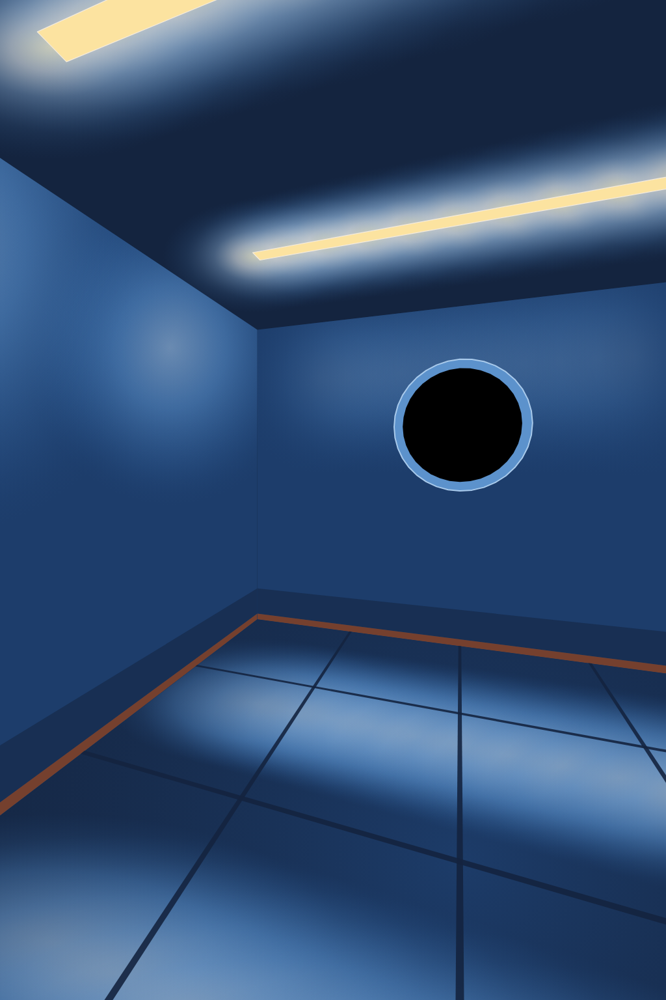
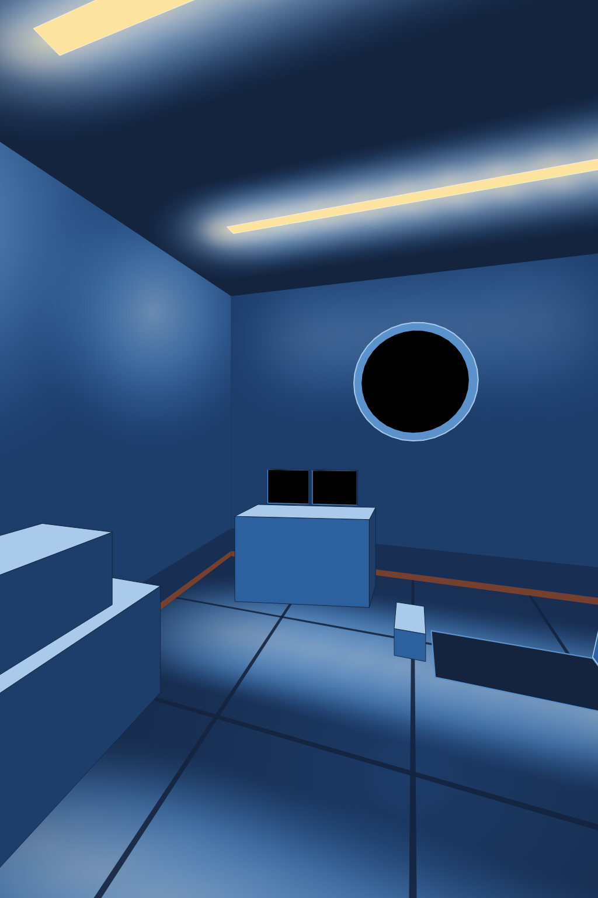
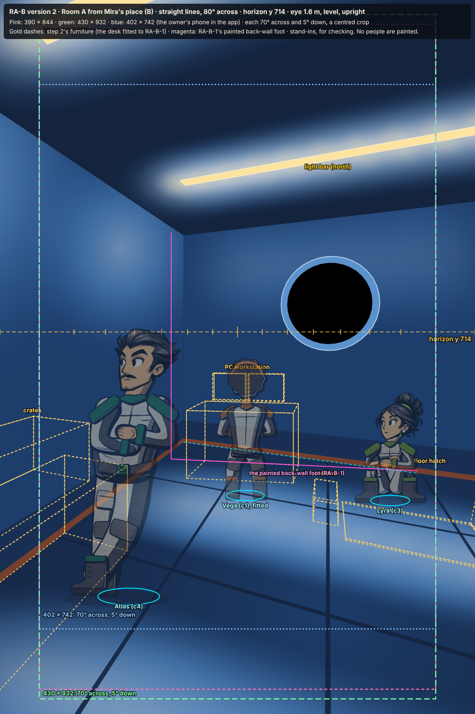
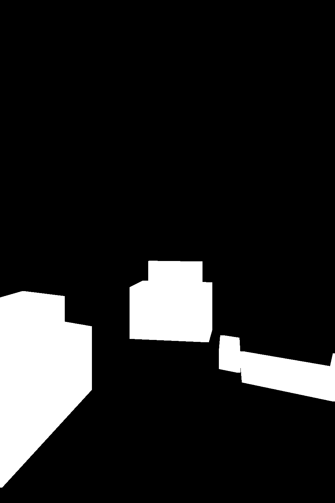
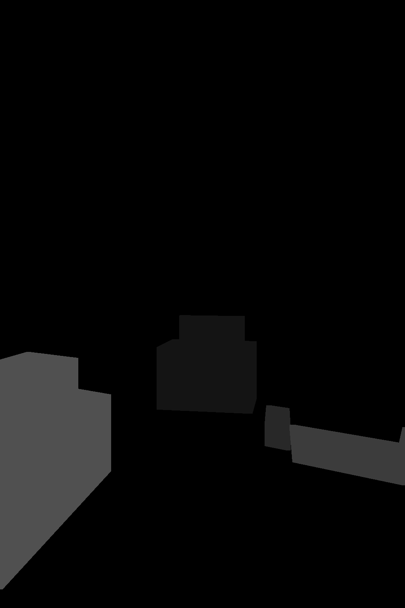

Sheet RA-B · Room A, view B
Version 2 · on RA-B-1 · for the Lead’s review · step 2 waits for the Lead’s goVersion 2 builds step 2 on RA-B-1, the accepted step-1 picture (AI-generated): Vega’s desk and Vega follow its painted floor by the back wall, two of the lit cells in each of its junction boxes are dimmed in code, and the masks pass the 15 px rule against its painted features, with named exceptions for the Lead’s decision. Room A’s second view, from Mira’s place by the south wall, painted the way view A was: two pictures, the empty room and then its furniture. The food capsule and Echo’s cabinet are out of this view, so there is no third step. No people are painted, because code draws them. Every picture made from this sheet is AI-generated and recorded as such. The only inputs are the code-drawn guides and masks on this page, and the picture its own step 1 keeps.
- Every piece whole. View A’s step 2 left the cabinet’s right side open, fading into the wall at the mask’s edge, and two masked fixes could not close it, so its frame was drawn in code. Step 2’s prompt here asks for each piece whole, its outline and frame closed on every side, and nothing fading into the wall or the deck at an area’s edge.
- The 15 px rule. View A’s step-1 picture painted wall features that step 2’s mask then had to clear. Here RA-B-1’s painted features are traced and step 2’s mask is checked against them (every edge covers a feature by 15 px or clears it by 15 px): see version 2 below.
- Openings. The round window and the two monitors’ screens are painted flat black and empty, for the game to fill; the colour check holds them to it. The mask stays 51 px clear of the window’s frame as the guide draws it.
- The lid. The hatch’s lid stands at the painting’s right edge, a sliver about 9 px wide (x 1015 to 1024), outside every phone’s slice (they end at x 939) and too small to lift as a layer of its own, so in view B it is part of the hatch’s piece.
Version 2, on RA-B-1
RA-B-1 is view B’s step-1 picture, AI-generated, accepted by the Lead (sha256 d05b45889a6bacb6…). Everything on this page that shows it is a labelled review picture. What version 2 changes:
- RA-B-1 (sha256 d05b45889a6bacb6…) is the accepted step-1 picture. Step 2 starts from it with two of the three lit cells in each junction box dimmed to unlit steel in code (dimB.py; 1914 px changed, all inside the two boxes; the top cell of each stays lit).
- The floor fit: RA-B-1 painted the back wall's foot 35.4 px under the guide's at x 420 and 16.7 px at x 640, more than 16 px from the far corner (painted at x 369, the guide's at 395.6) to x 648.5. Vega's desk and monitors and Vega follow the painted floor there: each point is scaled about the horizon by its foot's k, the desk's feet moving 9.2 to 34.9 px and Vega's 17.6 px (k 1.053; 8.3 px on the 402 x 742 phone). The rest is the guide's.
- The 15 px rule against RA-B-1's painted features (featuresB.json, view A's test): 4 features pass outright and 9 cross an edge where the desk or the crates stand in front of them, as named exceptions for the Lead's decision.
- Step 2's prompt adds the Lead's line: "The upper crate's top face stays clear: nothing lies or stands on it, because code adds the parcel Atlas lifts."
- The tool's s1 message names rb1_tools.py (it named ra1_tools.py); its outputs are unchanged.
The floor fit
RA-B-1 turned the back wall to face the viewer: its foot runs flatter than the guide’s (slope 0.04742 against the guide’s 0.1324, 1.17 px from straight), the far corner stands 26.6 px left of the guide’s, and the deck’s seam 1 m from the wall runs flatter too. Where the painted foot is more than 16 px below the guide’s, x 369 to 648.5, Vega’s desk, its monitors and Vega follow the painted floor: each point is scaled about the horizon by its foot’s k, so the desk stands on the painted deck against the painted wall, and Vega’s feet move 17.6 px down (k 1.053), eyes kept on the horizon. The hatch, the toolbox, the crates, Atlas and Lyra stay true to the camera, as the Lead set. The rule and a table for the walkers are in fit-B.json.
| x | 380 | 420 | 480 | 540 | 600 | 640 | 680 | 720 | 780 | 820 | 900 | 960 | 1000 |
|---|---|---|---|---|---|---|---|---|---|---|---|---|---|
| painted foot − guide’s, px | +38.8 | +35.4 | +30.3 | +25.2 | +20.1 | +16.7 | +13.3 | +9.9 | +4.8 | +1.4 | -5.4 | -10.5 | -13.9 |
| Vega’s foot, stage px | Guide | Fitted | Down by |
|---|---|---|---|
| 390 × 844 | 454.8 | 462.8 | +8 |
| 430 × 932 | 511.9 | 520.8 | +8.8 |
| 402 × 742 | 407.7 | 416 | +8.3 |

The lit cells, in code
Each of RA-B-1’s two junction boxes carried a column of three lit cells, which reads as a level. In code, as view A’s cabinet frame was drawn, each box keeps its top cell lit and its other two are unlit steel: a dark lens with an ink rim, their orange glow taken back to the box’s steel. 1914 px changed, all inside the two boxes. The result is step 2’s start picture, img/ra-B-1-dim.png (sha256 50ea3d44c1dbb805…), which dimB.py remakes from the records’ RA-B-1.


The 15 px rule against RA-B-1
13 painted features traced on RA-B-1 (featuresB.json; the kick strips, deck seams and corners are the guide’s own lines, as in view A). 4 pass outright. 9 cross an edge only where Vega’s desk or Atlas’s crates stand in front of them: named exceptions, each with its zone, for your decision. The two kept lit cells are 60 px or more from every mask.
| Feature | Step 2’s mask | Result |
|---|---|---|
| lower pipe run | crosses an edge | exception behind the desk's left end: Vega's desk stands in front of the lower pipe run, so the desk's outline must cross it: the run passes behind the desk's left end panel, where the outline also steps in round the wall box. behind the desk's right end: The run passes behind the desk's right end panel, as at its left. |
| lower pipe clamp, left | covered, 20 px to spare | pass |
| lower pipe clamp, right | covered, 16 px to spare | pass |
| upper pipe run | crosses an edge | exception behind the left monitor: The upper run begins at the pipe bend behind the left-hand monitor: the monitor's outline crosses it there. behind the right monitor: The upper run passes behind the right-hand monitor: the monitor's side edge crosses it, and the mask's step out to the desk's right end lies 21 px under it. |
| upper pipe clamp, left | covered, 28 px to spare | pass |
| upper pipe clamp, right | clear by 7 px | exception its lower left corner: The clamp stands 39 px clear of the monitor's side, but its lower left corner is 8 px from the corner where the mask steps out to the desk's right end, which is set by the desk. |
| pipe bend, left | crosses an edge | exception behind the left monitor and the desk's top: The bundle comes down behind the left-hand monitor and turns into the upper run there: the monitor's top and the desk's outline cross it. |
| wall box, left of the desk | crosses an edge | exception its right part: The box's right part is behind the desk's left end, so the desk's outline crosses it. |
| vertical pipe, left wall | crosses an edge | exception behind the crates' top: The pipe runs down the left wall behind Atlas's crates: their top edge crosses it. |
| left-wall pipe clamp, upper | clear by 7 px | exception its foot: The clamp holds the vertical pipe just above the crates' top: its foot is about 12 px from their edge, which is set by the crates. |
| pipe, left wall top | clear by 24 px | pass |
| grille plate | crosses an edge | exception its top band: Atlas's crates stand in front of the plate: their top edge crosses its upper band, up to 19 px of which stays above them. its right edge: The crates' right end stands 13 px from the plate's right edge: the edge is set by the crates. |
| locker bank | crosses an edge | exception its left side: The crates' right end stands 11 px from the lockers' left frame: the edge is set by the crates. its lower doors: The crates stand in front of the lockers' lower left door: their top and right edges cross it and the bank's middle frame. |


The picture
As view A’s: 1024 × 1536, straight lines, 80° across (focal 610.2 px), level, the horizon 714 px from the top. The camera is at Mira’s place by the south wall’s middle, at eye height (1.6 m), facing 342.3°, a little west of north. The north wall is the back wall, with the round window right of the middle; the west wall is on the left. In view: Vega (PC workstation, seen from Vega's right, back view); Atlas (crates, seen from Atlas's right, approved face); Lyra (floor hatch, seen from Lyra's left, approved face). Echo is out of view.



What each phone shows


The two steps
The image session names each picture RA-B-1, RA-B-2 and so on in the order it makes them. The Lead gives each step’s go, naming this sheet’s version and hashes, and accepts each picture before the next step starts. All commands run from the sheet’s folder with NumPy and Pillow, and the tool stops if any file is not the sheet’s.
Step 1 · the empty room
- Input
img/ra-B-empty.png, with no mask and no second picture- Size
- 1024 × 1536, one picture
- Check
- The colour check with the empty room’s map (the window held flat black), and the lines against the annotated guide: the horizon at 714, every vertical upright, the corner and floor seams where the guide puts them, the window round and where the guide has it
python3 -I rb1_tools.py check python3 -I rb1_tools.py s1 B RA-B-1 python3 -I rb1_tools.py colours B 1 RA-B-1.png RA-B-1
Step 1: the prompt, 4,522 characters · sha256 a29c10e22b0ec31c…
Create an illustrated science-fiction world with convincing three-dimensional depth and a hand-inked graphic-novel finish. Use strong silhouettes, expressive outlines, textured shadows and worn materials. Build environments from layered machinery, exposed pipes, suspended cables, overlapping panels and objects that suggest everyday use and repair. Organize dense detail around clear focal points. Use controlled colour palettes with warm luminous accents against cool shadow, giving each location its own atmosphere. The world should feel active, inhabited and larger than the visible frame, with layered depth, while the composition stays clear. Overall: lived-in, cyber, illustrated science fiction, lit and readable: warm lamplight against cool blue-steel shadow, dark only in the corners. This is a still picture and code adds the motion, so paint everything crisply: no motion blur, no lens blur, no film grain. Room A, the crew bay, in the same illustrated world: blue steel, lit warm. The whole room is one blue-steel family, the colours of the attached guide: deep navy in the shadows and corners (#14243F, #1D3D6B), steel blue on the walls and the deck (#2D609E), turning paler where the light falls (#5C92CC, #A9CAEB). The light is warm: the two light bars glow cream along their length (#FCE3A0), with a warm paper-white glow (#F4EBDD) on the ceiling around them and soft pools of pale light on the deck below. Walls, panels, pipes, cables and deck plates take their colour from that family; worn edges, rivets and plate seams show a little rust (#75402E); nothing is neutral grey, and nothing is tan, beige, olive, purple or violet. The shadows are deep navy, never black-brown or grey. Labels and paper are blank, in a warm paper white (#F4EBDD). Small indicator lights are warm orange (#EC793C); no other coloured light, and no green, purple or red light. Practical and worn, a working bay, quiet but lived in. The guide is the room's colour plan: paint over it in full detail and texture, but keep its colours and where its light falls. The room: Room A, the crew bay, a 4 m square room with a 3 m ceiling, here with no furniture in it. The ceiling is solid steel panels, with no skylight and no opening in it: two long light bars set into it run across the room about 1.4 m apart, each glowing warm cream along its whole length behind a plain diffuser, lighting the ceiling around it and throwing soft pools of light on the deck below. In the middle of the north wall, about 1.95 m above the deck, a round window about 1 m across sits in a heavy steel frame; its glass is flat black and empty, with nothing seen through it. The walls are steel panels, pipes, conduits, cable runs and small lockers, worn and repaired, darker toward the deck, with a narrow rust-brown kick strip along their foot; the deck is metal plates with seams, scuffs and a little rust, lit pale under the light bars and darker toward the corners. No beams, rays or shafts of light in the air. View: a straight-lined view at standing eye height, exactly as the attached guide shows: 80 degrees across and level, every vertical line perfectly straight and upright, every straight line in the room straight in the picture. The horizon, at eye level, is a straight line 714 px from the top, a little above the middle. Match the guide's layout, perspective, horizon and proportions exactly, line for line, as its floor seams, wall bases, corners and ceiling edges show. Do not curve the lines, tilt the view, zoom in or out, or move the horizon. This picture: from a place by the south wall, at its middle, at standing eye height, looking across the room toward the north wall. Ahead, the north wall, from its corner with the west wall a little left of the middle out to the right edge, with the round window right of the middle; on the left, the west wall. Above, the solid ceiling, with the two light bars running across it from left to right, the nearer one high at the top of the picture and the farther one lower, nearer the far wall. The deck is open and clear, with nothing standing on it, while the walls keep their pipes, panels and conduits. No people, and no words, letters or logos. Leave screens plain for the game to fill: openings marked black in the guide stay flat black and empty. No figures, faces, hands, silhouettes or animals; no signs, symbols or readable screens (any label is blank or abstract marks); no buttons or panels that look like game controls; no emblems, insignia, signature, watermark or border.
sha256 a29c10e22b0ec31c364cb4f2ace909df6743cf9d1978520a0329c3d35e7d2f70, of the text in UTF-8, as room-a-ra-b-prompts.txt gives it.
Step 2 · the furniture
One masked PLACE edit of the start picture (RA-B-1 with its cells dimmed, img/ra-B-1-dim.png) inside the furniture’s outlines grown 6 px (13.3% of the picture, in 3 areas), the desk fitted to RA-B-1’s floor. The input shows the guide there. The kept edit is lifted into one layer a piece, for the people’s depth. The mask passes the 15 px rule against RA-B-1 with the named exceptions above.


| Piece | Grey | Outline px | Lifted in the dry run | What it is |
|---|---|---|---|---|
| crates | 80 | 110,691 | 78,214 | Atlas's two crates against the west wall, nearest the camera and cut by the left edge. |
| PC workstation | 20 | 48,990 | 50,091 | Vega's desk against the north wall, left of the round window, with its two monitors. Their screens are openings: painted flat black, for the game to fill. Vega's chair is drawn with Vega, so none is painted. |
| toolbox | 40 | 4,847 | 5,071 | The closed toolbox at the hatch's left end. |
| floor hatch | 60 | 24,818 | 24,477 | Lyra's open hatch in the deck, its near rim crisp and lit. Its lid stands at the painting's right edge, outside every phone's slice, so it is part of the hatch's piece here. |
# the start picture: img/ra-B-1-dim.png, or remade from the records: python3 -I dimB.py <records folder> (sha256 50ea3d44c1dbb805ab57a01bb9db485bc8c2c4188de743300a0f6bc1b195a7e2) python3 -I rb1_tools.py s2 B img/ra-B-1-dim.png RA-B-2 # the image tool edits RA-B-2-S2-input.png with RA-B-2-S2-mask.png (alpha 0 = repaint) and the step-2 prompt python3 -I rb1_tools.py keep B img/ra-B-1-dim.png RA-B-2-raw.png RA-B-2.png python3 -I rb1_tools.py lift B img/ra-B-1-dim.png RA-B-2.png RA-B-2 python3 -I rb1_tools.py colours B 2 RA-B-2.png RA-B-2
Step 2: the prompt, 3,823 characters · sha256 c9e86fb3a897392d…
Create an illustrated science-fiction world with convincing three-dimensional depth and a hand-inked graphic-novel finish. Use strong silhouettes, expressive outlines, textured shadows and worn materials. Build environments from layered machinery, exposed pipes, suspended cables, overlapping panels and objects that suggest everyday use and repair. Organize dense detail around clear focal points. Use controlled colour palettes with warm luminous accents against cool shadow, giving each location its own atmosphere. The world should feel active, inhabited and larger than the visible frame, with layered depth, while the composition stays clear. Overall: lived-in, cyber, illustrated science fiction, lit and readable: warm lamplight against cool blue-steel shadow, dark only in the corners. This is a still picture and code adds the motion, so paint everything crisply: no motion blur, no lens blur, no film grain. Room A, the crew bay, in the same illustrated world: blue steel, lit warm. The whole room is one blue-steel family, the colours of the attached guide: deep navy in the shadows and corners (#14243F, #1D3D6B), steel blue on the walls and the deck (#2D609E), turning paler where the light falls (#5C92CC, #A9CAEB). The light is warm: the two light bars glow cream along their length (#FCE3A0), with a warm paper-white glow (#F4EBDD) on the ceiling around them and soft pools of pale light on the deck below. Walls, panels, pipes, cables and deck plates take their colour from that family; worn edges, rivets and plate seams show a little rust (#75402E); nothing is neutral grey, and nothing is tan, beige, olive, purple or violet. The shadows are deep navy, never black-brown or grey. Labels and paper are blank, in a warm paper white (#F4EBDD). Small indicator lights are warm orange (#EC793C); no other coloured light, and no green, purple or red light. Practical and worn, a working bay, quiet but lived in. The guide is the room's colour plan: paint over it in full detail and texture, but keep its colours and where its light falls. This is a correction of the attached picture. Repaint only the masked areas, and leave everything outside them exactly as it is. The three masked areas hold four pieces of furniture, each filling its own part exactly, painted in full detail in the picture's style and light. Paint each piece whole, with a crisp drawn outline all round it and its frame closed on every side: nothing fades softly into the wall or the deck at an area's edge. Ahead, against the far wall left of the round window: a long steel desk about 1.3 m wide and 0.74 m high, with two flat monitors standing side by side on it; their screens are flat black and empty, for the game to fill. No chair stands at the desk. On the left, nearest, against the left wall and cut off by the picture's left edge: two closed steel crates, a long low one with a smaller one on top, held by straps. The upper crate's top face stays clear: nothing lies or stands on it, because code adds the parcel Atlas lifts. On the right, in the deck: an open hatch, a long rectangular opening about 1 m by 0.5 m with a raised steel rim all round, its near edge crisp and lit, showing a dark space beneath with pipes and cables, running out of the picture at its right edge, where the foot of its heavy steel lid, raised almost upright along the hatch's far right end, just shows; at its left end, a closed steel toolbox standing on the deck. No people, and no words, letters or logos. Leave screens plain for the game to fill: openings marked black in the guide stay flat black and empty. No figures, faces, hands, silhouettes or animals; no signs, symbols or readable screens (any label is blank or abstract marks); no buttons or panels that look like game controls; no emblems, insignia, signature, watermark or border.
sha256 c9e86fb3a897392dff33e7debcb852d9204da1fe31a4948e286d40e03fc18d6f, of the text in UTF-8, as room-a-ra-b-prompts.txt gives it.
Checks on this sheet
The dry run
Every command of the tool, once, on the sheet’s own published files, with the code-drawn guides standing in for the image tool’s pictures. This shows that the files, the mask, the prompts and the lift agree with the manifest. It says nothing about a real picture.
| Every file and expected hash | pass |
| The two prompts as the manifest gives them | pass |
| Step 2’s mask: 13.34%, alpha as expected | pass |
| The kept edit changes nothing more than 4 px outside its mask | pass |
| The lift: all 4 pieces, none missing | pass |
| The colour check on steps 1 and 2 | pass |
Gaps and openings
The clear space between each two pieces, tight and with the masks’ 6 px growth; pieces in one area (the hatch and the toolbox) share it, split by their greys. The round window’s glass is 62 px from the mask and its frame, as drawn, 51 px. The screens lie inside the desk’s piece.
| Pieces | Tight | Grown |
|---|---|---|
| crates / PC workstation | 127 px | 115 px |
| crates / toolbox | 199 px | 199 px |
| crates / floor hatch | 199 px | 199 px |
| PC workstation / toolbox | 35 px | 23 px |
| PC workstation / floor hatch | 95 px | 83 px |
| toolbox / floor hatch | 9 px | 0 px |
The colour check, version 1 for Room A
The same check as view A’s, byte for byte. Here the window is in view, so the openings gate holds the window and the screens to flat black. The guides pass every gate. Room B’s own empty-room guide, put through it, fails 3 of them, so it tells the two rooms apart.
| Gate | What it asks | Empty guide | Guide | Room B’s guide |
|---|---|---|---|---|
| walls and deck in the base | at least 60% of the wall and deck area: hue 233-275, chroma 0.035 or more, lightness 0.15 or more | pass | pass | fail |
| each wall and the deck in the base | at least 45% of each area on its own | pass | pass | fail |
| orange capped | at most 8% of the picture warm orange (hue 30-75, chroma 0.10 or more, lightness 0.60 or more) | pass | pass | pass |
| rust capped | at most 3% of the picture rust (hue 25-55, chroma 0.05-0.11, lightness 0.30-0.50) | pass | pass | pass |
| no tan or olive | at most 3% of the wall and deck area in hue 70-115 (chroma 0.035 or more, lightness 0.15-0.80) | pass | pass | pass |
| not purple | at most 3% of the wall and deck area in hue 285-355 (chroma 0.035 or more, lightness 0.15 or more): Room B's colours | pass | pass | fail |
| not grey | at most 15% of the wall and deck area neutral grey (chroma under 0.035, lightness 0.15 or more) | pass | pass | pass |
| median lightness | the median lightness of the wall and deck area between 0.28 and 0.60 | pass | pass | pass |
| accents only orange, cream, rust | at most 0.2% of the picture bright and saturated (lightness 0.55+, chroma 0.08+) outside hue 233-275 and 355-105 | pass | pass | pass |
| openings flat black | the window, where the view holds it: 95% of it under lightness 0.12 | pass | pass | pass |
Everything the image session receives
20 files, by their path on this page. The tool checks each one against the manifest before it uses it. Pass these names and hashes on with the go.
| File | Bytes | sha256 |
|---|---|---|
img/ra-B-empty.pngstep 1's input: the empty-room guide | 987,736 | aecd9011e613ba65983f62bf77458a81ae0c620221f3878866aa25380cbf0647 |
img/ra-B-empty-regions.pngthe colour check's map for step 1 | 12,886 | cdab7d900472bd83d5b601cb77255c025f97ef3cdb2b6dd6c1ba05927ce93625 |
img/ra-B-empty-annotated.pngfor checking the lines: the horizon, the phones' slices, where people stand | 1,188,144 | f2b082bc3468895cd8dbeee83216c1b535ba554dae94736384c6ed3a0c339792 |
img/ra-B-guide.pngthe guide with the furniture: step 2's input inside the PLACE mask | 879,299 | cedc24f92734af297646ee7737476897fd1f8a969e54366dadab81e0d308ab68 |
img/ra-B-regions.pngthe colour check's map for step 2 | 14,038 | f393a30b3934eee3408ebfacc7c68df8d632854445d8a5726fea02a87fbe1a7f |
img/ra-B-place.pngstep 2's PLACE mask (white = repaint) | 3,671 | 37a251b914fb75d49a59462effcf4a128dbdd3223e0b032889f95386d3c71a98 |
img/ra-B-split.pngstep 2's split map: one grey a piece, for the lift | 3,739 | 6798b65ccd5e7f5e7d834a8aac2edd5dcbef3716ee482576601d29e34ff3e438 |
room-a-ra-b.jsonthe manifest: the kit the tool reads, the prompts, the expected hashes, the camera | 37,716 | 6073b955875b6bd08ed179fea063c40682ff52decc9c0bfac216e3d98f6dfe36 |
room-a-ra-b-prompts.txtthe two prompts, each with its sha256 | 9,341 | bbec009e6b14a13c21aff77aab6a539ea6983cfd8ac08e877e75324ec42dd3b2 |
rb1_tools.pythe tool, version 1: sheet RA-A's, with view B's manifest and no step 3 | 11,330 | 6c7260d14c4a3f4661b611ec2786ed0c2fc8ffbd55704d04cd552160a510e6aa |
lift5.pythe lift, the Lead's recipe (the same bytes as sheet RA-A's) | 4,787 | aa3620e37f96906bc3d121a2f0c1490921db4a3ca0b60872ee4263b0a8d83eee |
colour-check-ra1.pythe Room A colour check, version 1 (the same bytes as sheet RA-A's) | 11,025 | c882f4f8259b44bf8d689021daa2e5b0e8f028539cc076cc457fe144f582dbd2 |
camera-report-B.jsonthe camera report, version 2 (the Room A plan's; regenerated byte for byte on today's stage) | 6,583 | b6831dd179e32940a6b98fa906f51546a08e9eed317877d625490f1972c57813 |
img/ra-B-1-dim.pngstep 2's start picture: RA-B-1 (AI-generated) with two lit cells in each junction box dimmed in code | 3,065,302 | 50ea3d44c1dbb805ab57a01bb9db485bc8c2c4188de743300a0f6bc1b195a7e2 |
dimB.pythe cells' code edit: remakes the start picture from the records' RA-B-1 | 11,997 | d67cadc3f51d0516be3437df2e2267b79178b486e1e5b17a93dd2161f4faea23 |
dim-B.jsonits record: the cells, what changed, the hashes | 2,872 | a6c5b63e4ca3f126a6ba78466493dbc7ca8f3b7da8cc8ef4e6d75fe8ea742bdb |
measureB.pymeasures RA-B-1's painted floor lines | 4,912 | b0b0988250e6f0f2152e37ba3738f88aa6dc745bf69cd42a59c8a2e35ed1d793 |
measure-B.jsonthe measurements | 2,904 | 26cc2d0641a190df72cd013358276d306d7056c756079214a1ca21b591628574 |
fit-B.jsonthe floor fit: the rule, the offsets, the desk's corners, Vega, and a table for the walkers | 14,852 | 526b9f09466d2d73b91efd3320a9e6a6db3da62ee59ff937d4d62adc33b2c688 |
featuresB.jsonRA-B-1's painted features and the named exceptions, for the 15 px rule | 11,551 | 66950387a07d5409b7a67bdef7a8a279f42c4bea5f1c86f88d0e03fa4e8cd6c2 |
For this page only: the three phone crops (img/ra-B-phone-390.png, -430, -402), drawn by code.
Spend and order
View B’s two pictures, with a re-run each if a check fails. Views B to E together are 9 pictures planned, about $0.51, and at most 15 with re-runs, about $0.85, at Room A’s average so far ($0.0569 a picture over its 6 pictures, from the image session’s records). Room A has used about $0.34 of its cap, which is under $5. Nothing is painted before the owner answers the question on view A’s page; then the Lead gives each step’s go.